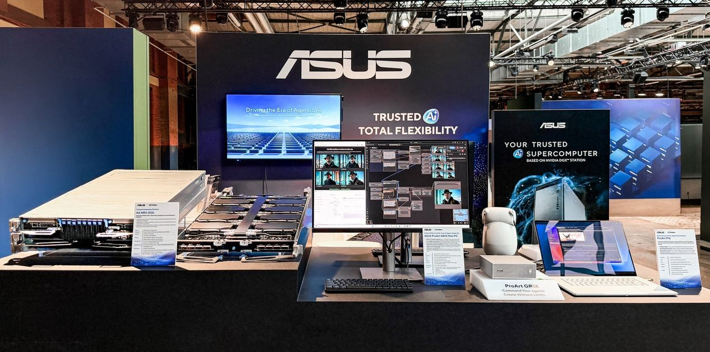

01 · 任务与证据
企业把代理试验搬进正式环境时，常常发现最费时间的不是再选一个模型，而是把模型运行、服务器容量、权限管理、监控和故障处理接起来。硬件供应商保证设备，软件供应商保证各自组件，实施伙伴负责一次性交付，客户却承担跨层排错。ASUS这次方案的产品逻辑，是把这些采购与部署工作放进一个更完整的组合。它应作为集成系统来分析，而不是把每个被提到的硬件型号都拆成一条独立新品消息。
ASUS Enterprise Agentic AI · 产品 · 集成系统
同一项目的完整分析。研究截止为14:00:02Z；来源核验与图片获取在后，不改变事件日期。

企业把代理试验搬进正式环境时，常常发现最费时间的不是再选一个模型，而是把模型运行、服务器容量、权限管理、监控和故障处理接起来。硬件供应商保证设备，软件供应商保证各自组件，实施伙伴负责一次性交付，客户却承担跨层排错。ASUS这次方案的产品逻辑，是把这些采购与部署工作放进一个更完整的组合。它应作为集成系统来分析，而不是把每个被提到的硬件型号都拆成一条独立新品消息。
原始发布将方案分成可理解的层次：AIHUB负责注册、治理与监控，NVIDIA AI Enterprise和ASUS软件承担部分运行及编排，底层由服务器与相关服务支撑。配置依据包括模型规模、性能目标和运营要求。这说明客户面对的是需要匹配场景的方案，而不是一个固定配置、统一售价、点击即可启用的消费级应用。对于已有企业基础设施的团队，接入现有身份、日志和运维流程的成本，可能比第一台机器的安装更影响最终采用。
旧流程里，团队先分别挑选服务器、推理软件与管理工具，再协调实施伙伴解释各自边界。新流程希望把这些选择收敛成一次配置和交付。用户的工作也从手工拼接组件，转向明确负载目标、治理规则与支持责任。但产品页无法读取，公开发布没有充分交代审批交互、失败恢复、策略版本或者跨组件回滚。因此不能把一个集成品牌，直接写成已经统一了所有运行控制。需要验证的是实际操作过程，而不是营销结构图上的统一。
对产品经理而言，最重要的采购问题是责任是否连续。如果模型服务升级后工具调用失败，谁负责定位；如果治理策略与编排配置冲突，管理员在哪里观察和修复；如果容量不足导致任务排队，性能承诺覆盖哪一层。这些都比笼统说支持企业级代理更接近用户的工作任务。ASUS的组合可能减少供应商协调成本，也可能只是把多份合同放进同一个销售入口。公开证据尚不足以判断哪一种情形成立，应把它写成待验证的商业价值假设。
发布会还涉及服务器、工作站和边缘设备，但它们的时间状态必须分别处理。例如另一份HGX Rubin NVL8材料给出Q4 2026的发货方向，不能因为标题采用准备发货措辞，就断言现在已经全球供货。同样，已有硬件增加内存选项或集群配置，也不等于整个平台首次上市。价格和地区供货未核实，所以正文可以解释配置取舍，却不应虚构预算区间、采购周期或所有组件的普遍可买性。
竞争对象包括企业自行采购并维护的NVIDIA软件与服务器组合、其他系统集成商，以及已有基础设施上逐步增加的代理运行环境。可证伪的试点应要求供应方演示一次跨层故障处理、一次受控升级和一次容量扩展，记录客户需要介入多少环节。如果集成服务明显缩短这些过程，并给出连续的支持责任，打包才产生产品价值；如果每次问题仍要客户协调多个团队，优势可能主要是采购便利，而非更可靠的代理运营。